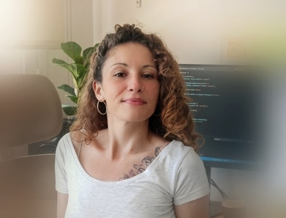

Sobre mí

Desde hace ocho años me dedico a coordinar equipos: gestiono la convivencia, resuelvo conflictos, organizo horarios y sostengo el día a día de niños, familias y compañeros en la Escola Pia de Sitges, donde actualmente combino tareas de vetlladora con la coordinación del servicio de comedor, el patio de ESO y la dirección de campamentos de verano. Es un trabajo que exige orden, criterio y capacidad de reacción constante — cualidades que ahora aplico a un ámbito nuevo.
Decidí empezar el CFGS de Desarrollo de Aplicaciones Web porque quería entender y construir los sistemas que hasta ahora solo usaba. Me interesa especialmente la parte de servidor y bases de datos — el "cómo funciona por dentro" — aunque no descarto el desarrollo de interfaces, y disfruto igualmente de cualquier reto de programación. Aplico la misma disciplina de organizar personas a organizar código: entender el problema antes de escribir la solución.
Competencias y habilidades
competencias sociales y personales
- Liderazgo y coordinación de equiposOcho años coordinando equipos de personas en entorno educativo y de tiempo libre.
- Resolución de conflictosGestión diaria de situaciones entre niños, familias y equipo.
- ComunicaciónInterlocución constante con familias, niños y compañeros de trabajo.
- Organización y planificaciónProgramación de horarios, turnos y actividades de campamento y comedor.
- Trabajo en equipoCoordinación con otros profesionales para un objetivo común.
- Capacidad de adaptaciónCambio de sector profesional hacia el desarrollo web.
- ResponsabilidadDirección de campamentos de verano con niños a cargo.
- Aprendizaje autónomoEstudio de nuevas tecnologías fuera del aula, por mi cuenta.
- EmpatíaEscucha activa con niños, familias y equipo de trabajo.
- Atención al detalleRigor en la gestión de la información y las tareas diarias.
habilidades técnicas (en desarrollo)
Nivel orientativo según mi progreso actual en el ciclo
Proyectos
Algunos de los proyectos en los que estoy trabajando durante el ciclo. Puedes ver el código completo en mi GitHub.
API con FastAPI
URL Checker – Aplicación web que analiza URLs y direcciones IP con la API de VirusTotal y muestra el nivel de seguridad en porcentajes (inofensivo, malicioso, sospechoso). Backend en FastAPI y frontend en Streamlit.
Aplicación web con Flask en construcción...
Aplicación emulando Wallapop. Un sistema de compra y venta de productos de segunda mano.
Contacto
¿Estás trabajando o quieres hablar sobre algún proyecto? Escríbeme o encuéntrame en GitHub.